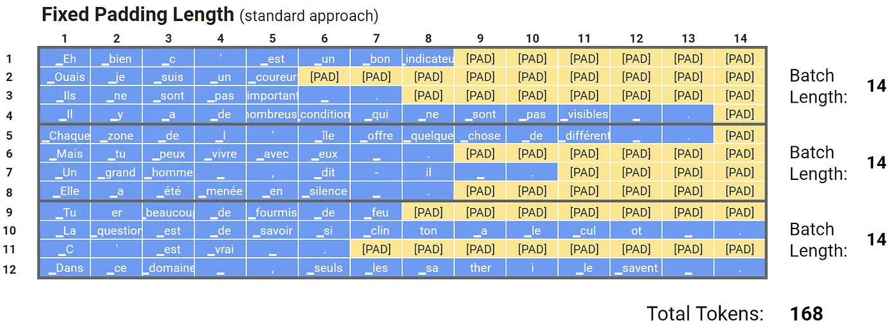
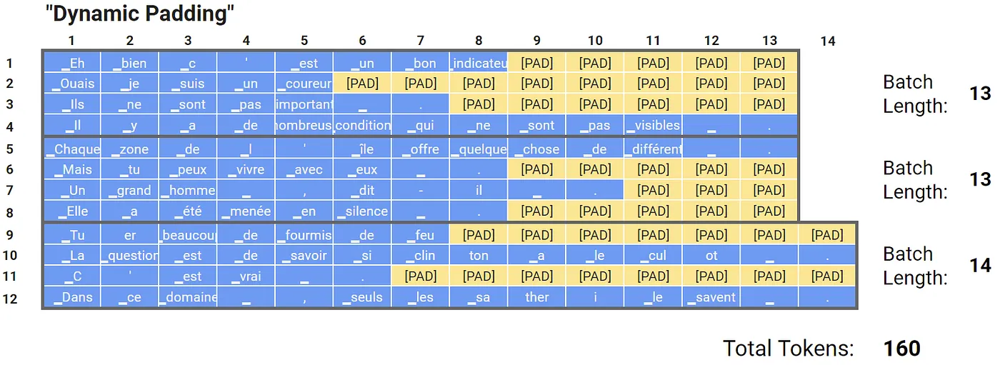
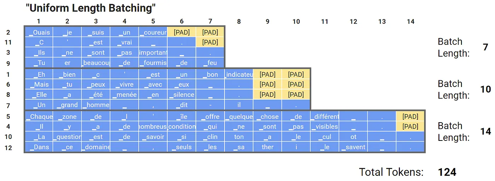

Why We Pad
GPUs work much better when they can process several training samples at the same time, so we feed them a "batch" of samples. However, for a GPU to handle a batch, every input must be the same length. To make this work, we add padding to all our input sequences to reach a fixed length. We also give the model an "attention mask" for each sample. This mask marks the [PAD] tokens and tells BERT to ignore them.
Below are some example sentences from a French dataset that have been tokenized using a French BERT model called CamemBERT. For illustration, let's assume our dataset has only these 12 sentences, and we split them into 3 batches with 4 samples each.
In order to feed multiple samples into BERT at once, we pad all the sentences to a length of 14, which is the same as the longest sentence in our dataset. This is a common method I've used in all my examples because it's very simple to code.
Dynamic Padding
Even though the attention mask makes sure that the [PAD] tokens don't affect how BERT reads the text, these tokens still go through all the math operations in BERT. This can slow down training and evaluation a bit. And while every sample in a batch must be the same length, BERT doesn't mind what that length is—we can use different maximum lengths for different batches!
(If you think about it, there's nothing in our code that tells BERT exactly how long each sequence will be. We just pad our data to whatever length we choose, and BERT handles it just fine.)
If we want to improve our code, we can adjust the padding for each batch individually. This change doesn't affect our accuracy, as Michaël's experiments have shown.
Uniform Length Batching
We can go one step further by sorting our dataset by length before creating the batches, making the process even more efficient.
However, there is a caveat. In each epoch, the dataloader returns batches in the same order (e.g., the second batch in the first epoch is identical to the second batch in the next epoch). This consistency may lead the model to memorize the pattern, increasing the risk of overfitting. To avoid this, we need to randomly select indices and create batches accordingly, which will help prevent the model from overfitting.
Michael's experiments also support the intuition that this technique shouldn't adversely impact performance.